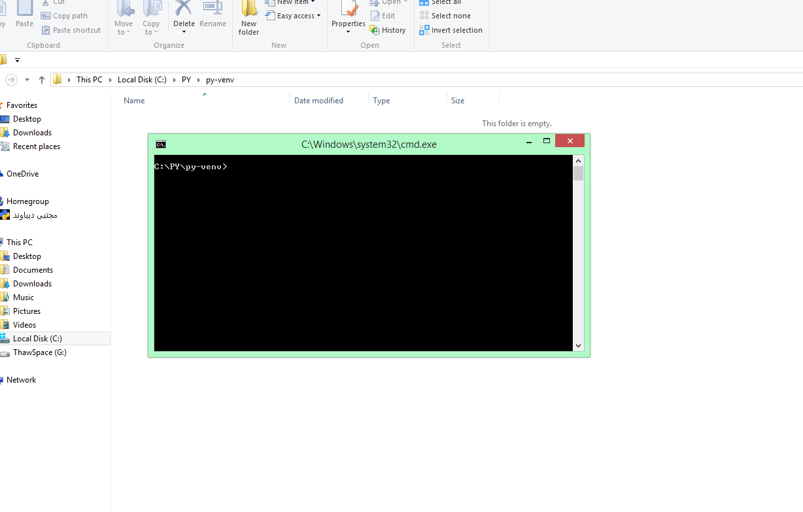
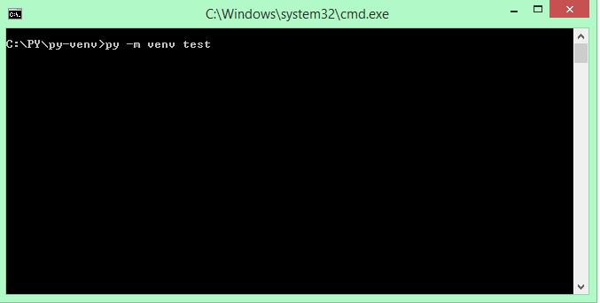
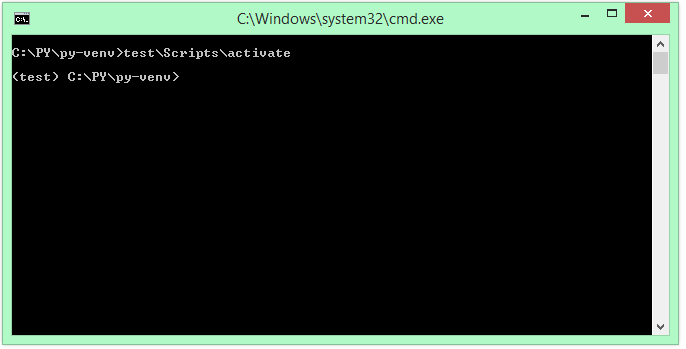

غیر از سیستم خودتون اجرا کنید که اصطلاحا به اون محیط مجازی میگن
یکی از این شرایط وقتی هست که میخواین فایل پایتونی رو در یک سیستم
دیگه اجرا کنید. یا مثلا یک کلاینت سوکت ساختید و میخواید تو یک سیستم
اونو اجرا کنید.
با ما همراه باشید
خب اول از همه وارد پوشه ای که میخواید بشید و شیفت رو نگه دارید و همزمان راست کلیک کنید
در پنجره ی باز شده روی (
open command windwo here)کلیک کنید.

حالا در پنجره باز شده دستور
py -m venv my_venv را وارد
کنید. 

حالا میبینیم که یک پوشه با نامی که برای محیط مجازی انتخاب کردیم ساخته شده

حالا باید محیط مجازی را فعال کنیم
برای این کار وارد کامند پرامت می شویم و آدرس فایل فعال سازی را مینویسیم

این فایل در پوشه محیط مجازی درون پوشه Scripts با نام activate قرار دارد
بعد از فعال سازی نام محیط مجازی را مانند تصویر بالا درون cmd میبینید
برای غیر فعالسازی هم کافیست از دستور
deactvie استفاده کنیدممنون که تا آخر همراهمون بودید